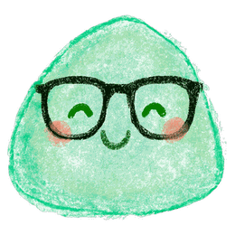

← back
⌨

slimehedron
.
slow
fast
▶
🎲
-
play
clear
↺
✨
Acoustic
Electronic
Percussion
1/2
1/4
1/8
1/8T
1/16
1/16T
1/32
4/4
3/4
6/8
5/4
7/8
9/8
Key
scale
∿ sine · smooth
△ triangle · mellow
⊿ saw · bright
⊓ square · buzzy
⚄ random · surprise
Tempo
BPM
tape
delay
♪
3D
view
3D
2D
look
glass
crayon
space
auto
normal
portal
curved
shape
cut
puff
flip
—
→
—
chords
chord progression
🎲
✕
chord lasts
1 bar
2 bars
4 bars
follow this progression
clear
1 bar
2 bars
4 bars
add
Preferences
✕
Things you set once, not per song: MIDI.
send MIDI out
port
— turn on MIDI out above —
if a note sticks
silence the rig
play slimehedron from a keyboard
MIDI in
device
— enable above —
channel
follow their tempo
map a knob
＋ assign CC
advanced
microtonal (MPE)
send clock
channels
Melody
Drums
Bass
Chords